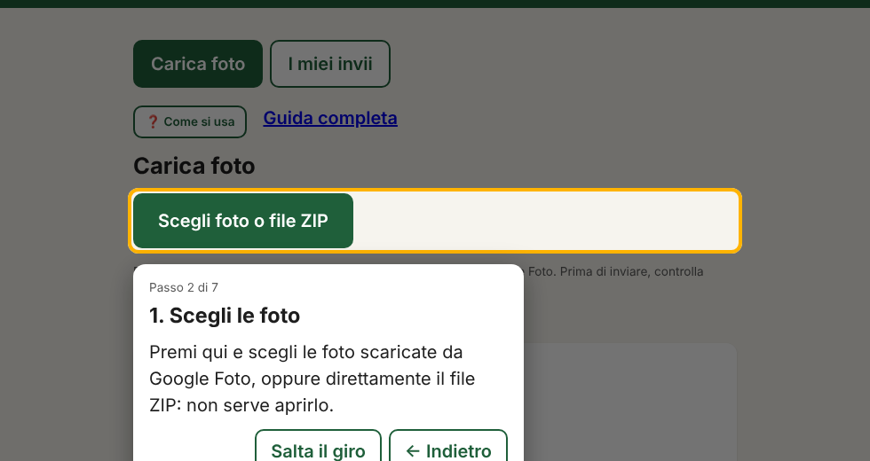
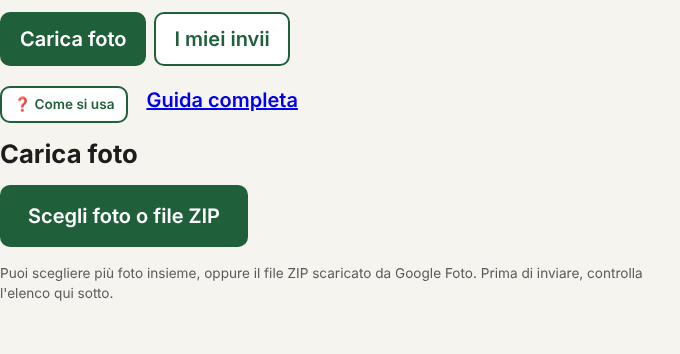
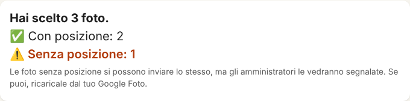
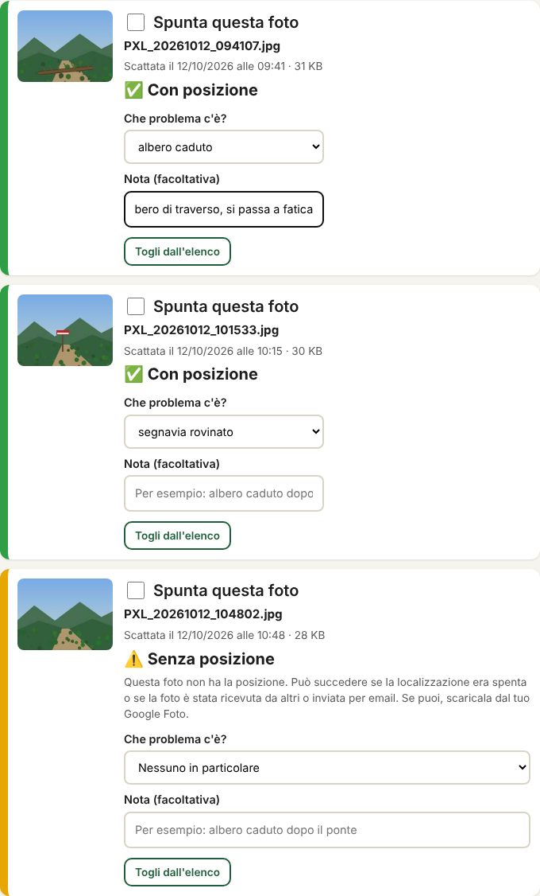
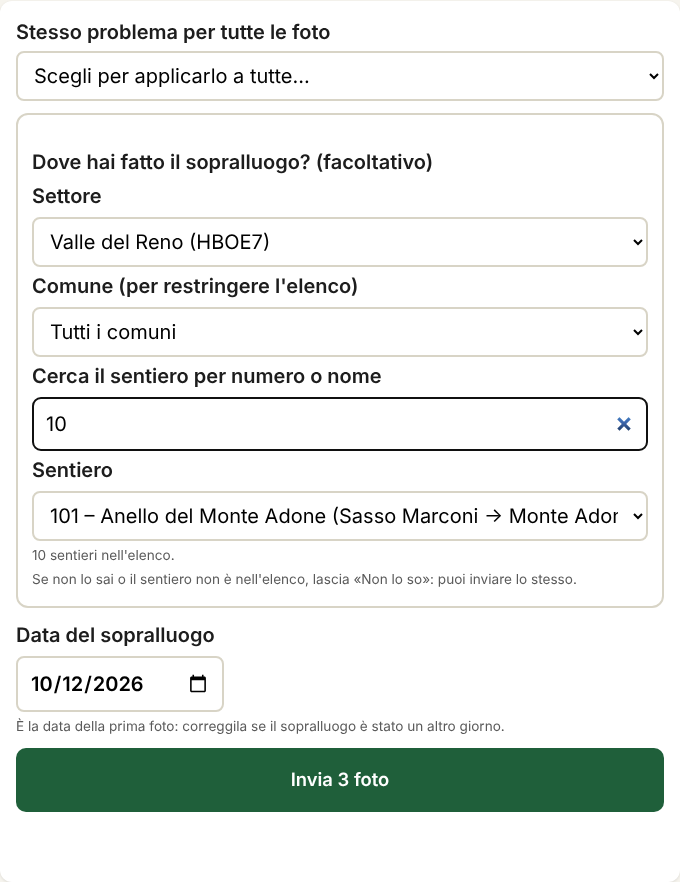
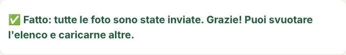
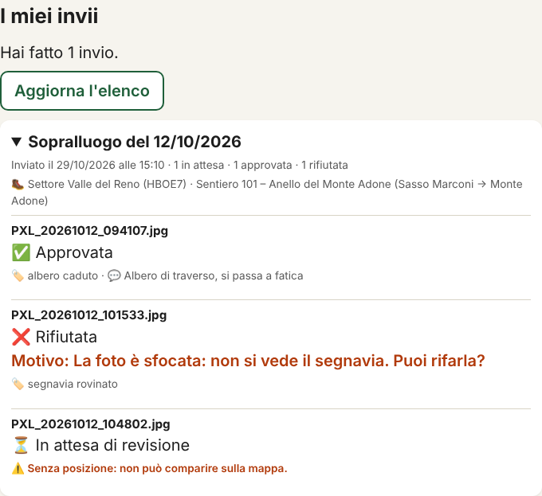
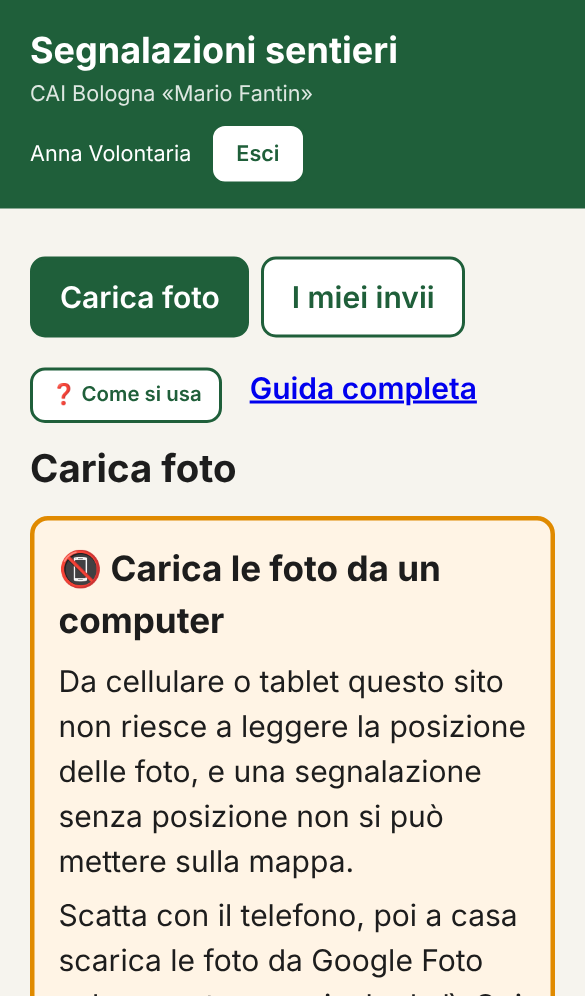

Come inviare le foto dei sentieri
Ultimo aggiornamento: 29 ottobre 2026. Questa guida cambia quando cambia il sito: aprila sempre online, non stamparla e non salvarla, così hai sempre la versione giusta.
📵 Le foto si caricano da un computer
Da cellulare o tablet il sito non riesce a leggere la posizione delle foto, e una segnalazione senza posizione non si può mettere sulla mappa. Il telefono serve solo per scattare: a casa si scaricano le foto sul computer e si caricano da lì.
Di cosa hai bisogno
- Un computer (Windows o Mac) con Chrome, Edge, Firefox o Safari.
- Il tuo account Google dell'associazione (finisce con @caibo.it). Se non riesci a entrare, scrivi a un amministratore: va abilitato.
- Google Foto sul telefono, con la copia automatica delle foto attiva.
Prima di uscire
Controlla che la fotocamera salvi la posizione nelle foto, altrimenti non c'è modo di recuperarla dopo.
- iPhone: Impostazioni → Privacy e sicurezza → Localizzazione → Fotocamera → «Mentre usi l'app».
- Android: apri la Fotocamera, entra nelle impostazioni e attiva «Salva posizione» (o «Tag di localizzazione»). Il nome può cambiare da un telefono all'altro.
Poi scatta come sempre. Se puoi, fai una foto per ogni problema, ben inquadrata, con il segnavia o l'ostacolo ben visibili.
1Scarica le foto da Google Foto
Si fa a casa, dal computer.
- Aspetta che le foto siano arrivate su Google Foto: apri photos.google.com dal computer e controlla che ci siano.
- Seleziona le foto del giro: passa il mouse su una foto e clicca sul cerchio in alto a sinistra; ripeti per le altre.
- In alto a destra clicca sui tre puntini (⋮) e scegli Scarica. Non scegliere «Condividi».
- Se hai scelto più foto, Google crea un file ZIP (per esempio «Photos-001.zip»). Non serve aprirlo né estrarlo: lo carichi così com'è.
- Il file finisce nella cartella Download (o «Scaricati») del computer.


Importante
Scarica dal sito di Google Foto sul computer. Non farti mandare le foto per email o WhatsApp e non copiarle in altri modi: così perdono la posizione.
Se una foto risulta «Senza posizione»
Se la localizzazione era attiva e il sito dice comunque «Senza posizione», avvisa un amministratore indicando che telefono usi (Android o iPhone) e come hai scaricato le foto. Stiamo ancora verificando alcuni casi (per esempio Google Foto con la qualità «Risparmio spazio» e le foto di iPhone).
2Apri il sito ed entra
- Apri l'indirizzo del sito: quello che ti ha dato il CAI.
- Premi il pulsante blu di Google e scegli il tuo account @caibo.it. Non usare un account personale (per esempio Gmail): non funziona.
- Se compare «Non sei ancora abilitato», scrivi a un amministratore con il tuo indirizzo @caibo.it: va abilitato.

La prima volta parte da solo un giro guidato che mostra dove cliccare. Puoi rivederlo quando vuoi con il pulsante ❓ Come si usa.

3Scegli le foto
- Nella scheda Carica foto premi Scegli foto o file ZIP.
- Vai nella cartella Download e scegli il file ZIP (oppure le foto, se le hai già estratte). Puoi sceglierne più di una insieme.
- Aspetta che la pagina legga le foto. Con uno ZIP grande può servire qualche minuto: non chiudere la pagina.

- Si possono inviare foto JPEG (Android) e HEIC (iPhone). Gli altri file vengono ignorati.
- Per volta puoi caricare al massimo circa 1,5 GB. Se hai di più, fai due invii.
- Su alcuni computer le foto HEIC non mostrano l'anteprima: è normale, la foto si invia lo stesso.
4Controlla l'elenco
Per ogni foto la pagina dice se ha la posizione.

- ✅ Con posizione: tutto bene.
- ⚠️ Senza posizione: si può inviare, ma la foto non comparirà sulla mappa e gli amministratori la vedranno segnalata. Se puoi, riscaricala da Google Foto sul computer.
- ❌ Non leggibile: il file è rovinato e non si invia. Toglilo dall'elenco.
Per scartare una foto premi Togli dall'elenco.
5Che problema c'è?
Sotto ogni foto scegli il tipo di problema dal menu (per esempio albero caduto, frana, segnavia rovinato) e, se vuoi, scrivi una nota breve.

- Se il problema non è nell'elenco, scegli «Altro»: in questo caso la nota è obbligatoria e deve spiegare di che problema si tratta.
- Molte foto con lo stesso problema? Spunta le foto con la casella Spunta questa foto, scegli il problema (e la nota) nella barra che compare sopra l'elenco e premi Applica alle foto spuntate. Oppure usa Stesso problema per tutte le foto.
6Dove hai fatto il sopralluogo
È facoltativo, ma aiuta molto gli amministratori.
- Scegli il settore.
- Se vuoi restringere l'elenco, scegli il comune.
- Scrivi il numero del sentiero (o una parte del nome) nella ricerca, poi scegli il sentiero dal menu.

Se non lo sai, o il sentiero non c'è, lascia «Non lo so»: puoi inviare lo stesso.
Settore e sentiero valgono per tutte le foto di quell'invio. Se in un giro hai fatto sentieri diversi, fai invii separati: prima le foto di un sentiero, poi quelle degli altri.
7Data e «Invia»
- Controlla la data del sopralluogo: è quella della prima foto. Correggila se il sopralluogo è stato un altro giorno.
- Premi Invia. Le foto partono originali, senza perdere la posizione.
- Non chiudere la pagina finché compare «Fatto: tutte le foto sono state inviate». Con tante foto può volerci un po'.

Se qualche foto non parte, sotto la foto compare il motivo. Premi di nuovo Invia: riprova solo quelle che mancano, senza duplicare le altre.
8I miei invii
Nella scheda I miei invii vedi cosa è successo alle tue foto:
- ⏳ In attesa di revisione: gli amministratori non l'hanno ancora guardata.
- ✅ Approvata: la segnalazione è stata accettata.
- ❌ Rifiutata: c'è scritto il motivo. Se puoi, rifai la foto e inviala di nuovo.

Domande frequenti
Posso caricare le foto dal cellulare?
No, per ora no. Da cellulare o tablet il sito non riesce a leggere la posizione delle foto e la segnalazione perde valore. Se apri il sito da un telefono vedi un avviso: puoi proseguire lo stesso, ma le foto risulteranno senza posizione.

Dice «Senza posizione», ma avevo la localizzazione attiva
La causa più comune è che la foto sia passata da un altro canale (email, WhatsApp, salvataggio dall'app del telefono), che toglie la posizione. Riscaricala dal sito di Google Foto sul computer, come nel passo 1. Se succede ancora, avvisa un amministratore.
Non riesco a entrare
Controlla di aver scelto l'account che finisce con @caibo.it. Se compare «Non sei ancora abilitato», scrivi a un amministratore con il tuo indirizzo: va aggiunto all'elenco degli utenti.
Il sito mi chiede di accedere di nuovo
Per sicurezza l'accesso scade dopo un po'. Accedi di nuovo e controlla l'elenco delle foto prima di inviare.
Ho inviato una foto per sbaglio
Scrivi a un amministratore dicendo quale foto e di quale giorno: può rifiutarla o eliminarla.
Chi vede le mie foto?
Solo gli amministratori del CAI Bologna, dopo l'accesso con l'account dell'associazione. Le foto non sono pubbliche e non hanno un indirizzo che si possa condividere.
Come rivedo il giro guidato?
Apri il sito ed entra, poi premi ❓ Come si usa in alto, sopra «Carica foto».
Hai ancora un dubbio?
Scrivi a un amministratore del CAI Bologna «Mario Fantin». Più sei preciso («ho scaricato da Google Foto dal computer, il file è uno ZIP, la foto X dice senza posizione»), più è facile aiutarti.